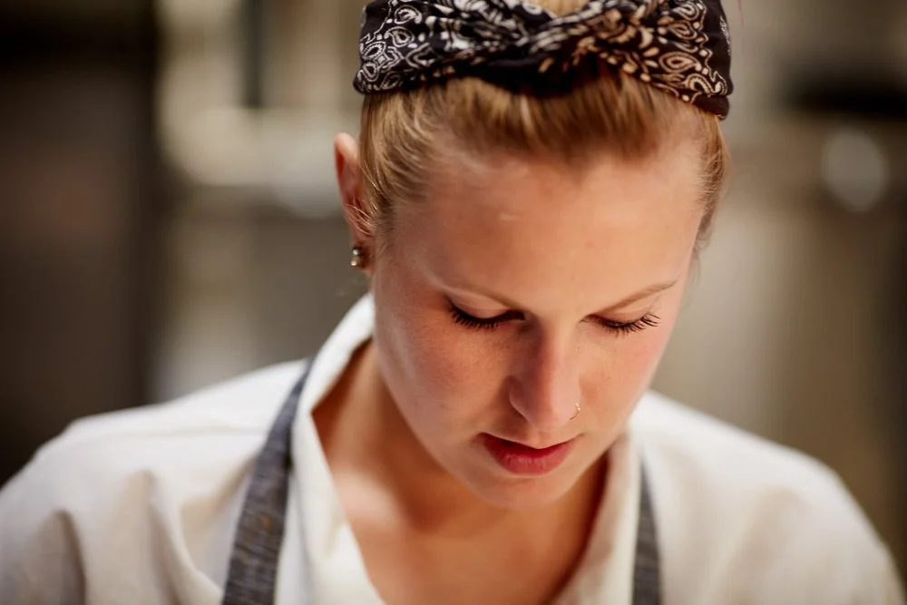
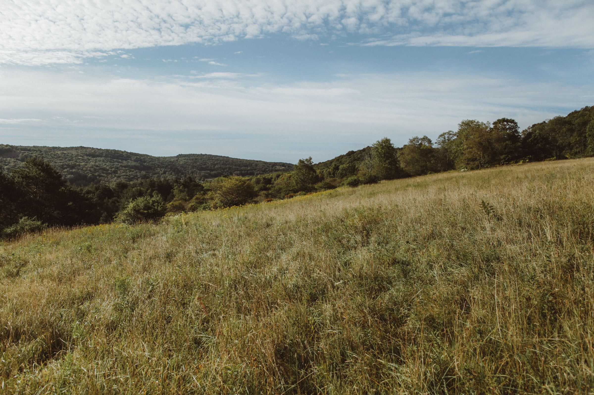

The Kitchen
Whole-animal, valley-grown
A menu that turns with the season — composting kitchen, custom Hestan suite, expansive wine list, craft cocktails with local spirits.


Armonk, New York · Opening 2027
An 1820 building restored as the area's first LEED-certified room — 144 seats from Chef Roxanne Spruance, built around the seasonal bounty of the Hudson Valley.
Field and stream to fork

Lunch, dinner and a dynamic bar at the heart of the hamlet — a calm, biophilic room where the food and the land do the talking.

Executive Chef
A critically acclaimed New York chef known for innovative, seasonal cooking that respects regional traditions. Her pedigree runs from WD~50 with Wylie Dufresne to Blue Hill at Stone Barns with Dan Barber, her own Michelin-recommended Kingsley in the East Village, and Executive Chef at The Barn at Bedford Post — Michelin Plate in 2021 and 2022.
At Flybrook she leads a kitchen built around ingredients grown on our own land in Livingston Manor and across the valley — an avid hunter and angler, she's a Food Network Chopped winner and a Crain's 40 Under 40.
Inside the Room
The Kitchen
A menu that turns with the season — composting kitchen, custom Hestan suite, expansive wine list, craft cocktails with local spirits.

Our Farm
Grown in Livingston Manor, on the table by lunch in Armonk — and the same fields host our farm dinners in the Catskills.

The Bar
A dynamic bar, a covered porch, and a seasonal rooftop above — 144 seats across the building, May through October.
12 Maple Avenue
Two original exterior masonry walls and the facade have been preserved; everything inside has been rebuilt for a long, careful life. The new Flybrook is the first LEED-certified building in the area — geothermal heating and cooling, recycled and bio-based materials, and architectural salvage from other at-risk buildings in collaboration with the North Castle Historical Society.

Opening 2027
Join the waitlist for opening news, farm dinners, and a few seats held back for neighbors.